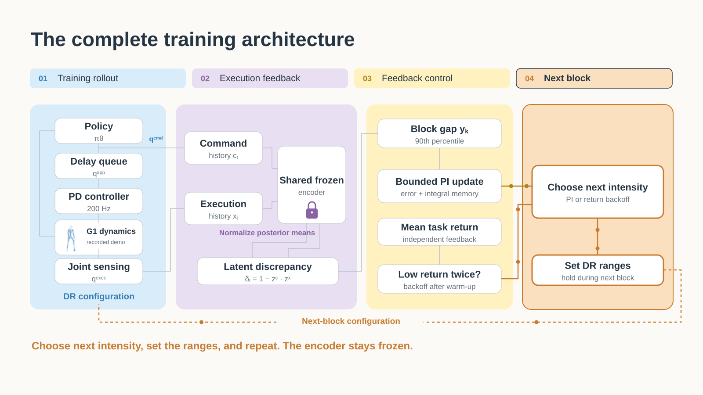
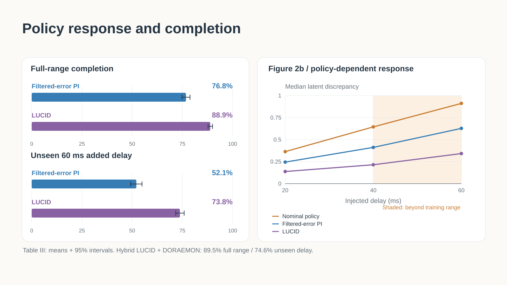
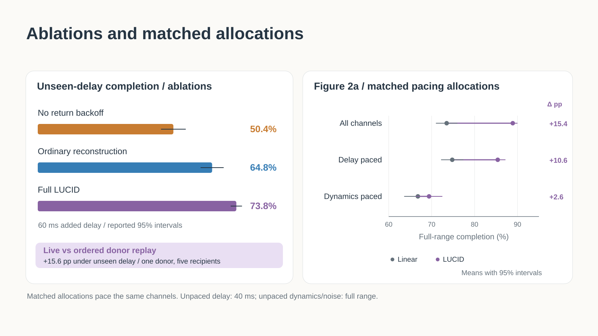

Prepare the policy for real-world delay.
Learned feedback in training.
Policy and controller onboard.
Execution becomes curriculum.
A learned motion representation turns the command–execution relationship into a signal for training difficulty.
From learned feedback to physical G1.
Start with 15 seconds of selected hand, foot, and downward pushes. Then watch the complete presentation, including its 173-second continuous physical take at 1×. The 3:11 review cut and the 2:56 submission cut are available separately.
Looped turning under manual perturbations
LUCID policy · 0–60 ms added randomized command delay, confirmed by the experimenter. This 173-second excerpt runs at normal speed with no internal cuts, repeats, or speed changes. The face is blurred; the room and limbs remain visible; original room audio is omitted.
The selected demonstration is separate from the paper’s matched +40 ms benchmark. Manual perturbation forces were not measured. No matched filtered-error PI hardware recording is shown here.
Inspect the annotated hand and foot contacts
Times refer to this continuous excerpt. Arrows show approximate directions in the camera view. Sustained contacts are grouped; these labels are not measured force impulses.
| Label | Excerpt time | Contact | View direction | Inspect |
|---|
One feedback loop. The next training world.
Move the inputs. Watch the published controller change the ranges for the next block.
What should happen next?
Nominal gap reference r = 0.145. kP = 0.8; kI = 0.15; α = 0.04. Integral limited to ±0.8; controller output to ±1.
I ← clip(I + e, −0.8, 0.8)
u = clip(0.8e + 0.15I, −1, 1)
λ_next = clip(λ + 0.04u, 0, 1)
Representative ranges from the manuscript. Continuous ranges interpolate from nominal settings; discrete delay bounds advance in 5 ms ticks.
Explore the supplied 90-second process-film study
A cinematic method illustration: recorded evaluation poses, MuJoCo geometry, and staged signal diagrams. The close-up ghost is a representative reference; histories, latent vectors, controller inputs, and formation lettering are illustrative. This optional study has its own ambient soundtrack and is separate from the narrated 176-second presentation.
Design choices and evidence boundaries ↗The skeleton comes from the robot model.
Walk, turn, and side-step through all 300 captured samples. The curves and skeletons share one clock.
Forward kinematics from the original G1 joint states and source references, using the same MuJoCo model as the videos. Skeletons align the pelvis in XY for pose comparison; height and orientation stay intact. Root error uses the original world positions. Dashed lines mark the 2 s and 4 s impulse schedule.
The supplied bundle and author identify LUCID on the left and filtered-error PI on the right, with the shared reference in the center. The curves use those corresponding tracks; aggregate performance estimates come from the manuscript. The actual issued-command histories and matching paper encoder outputs are not in these captures, so the method equations are shown symbolically.
One policy. A thousand different experiences.
From one robot’s actuator delays to a field of 1,024 independent environments.
See what each robot experiences.
The visible delay range is 0–40 ms. Each robot’s bar shows its maximum group delay.
Direction and magnitude are visible when a velocity impulse occurs.
Green means no failure yet. Red persists after the first detected failure.
Scale in the replay.
Robustness in the results.
Full-range simulation completion
Reported LUCID meanUnseen 60 ms delay completion
Reported LUCID meanG1 gain with +40 ms added delay
Paired difference vs filtered-error PIThe footage visualizes evaluation with a frozen policy; it does not show training updates. The replay’s live status counts are separate from the paper’s completion estimates above. Original source ↗
One motion. Three synchronized views.
Explore all five original excerpts. Walking and turning also include their complete six-second recordings.
Red: pelvis below 60% of reference height for 0.10 s. Amber: displayed tracking error above 0.50 m. Cyan: kinematic reference, without perturbations.
Post-hoc balance excerpts, selected from eight motion pairs. Some LUCID runs fall after the excerpt ends. These clips do not establish overall success rates. Isaac Lab clips show PhysX poses rendered in MuJoCo.
Selection record and policy provenance
Full six-second MuJoCo pose captures for walking, turning, and side stepping are available in the data explorer. The MP4 library retains the selected excerpts. Timings below come from the supplied selection audit; “none” means no height-threshold fall within those six seconds.
| Dynamics | Motion | Excerpt | LUCID fall | Filtered-error PI fall |
|---|
Explore the details at your own pace.
The film emphasizes the main effect and two design tests. These figures retain the policy-response curves, return-backoff ablation and matched allocations.
The complete training architecture

Policy response across injected delays

Return backoff and matched channel allocations
